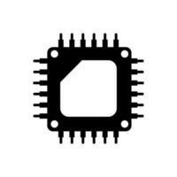

A RISC-V dual-core processor implementation.
This project is a dual-core in-order RISC-V processor with a 5-stage pipeline with seperate L1 2-way set associative dcache and direct mapped icache, utilizing the MSI cache coherence protocol. It also boasted an always-not taken branch predictor, a hazard unit, and a forwarding unit to minimize stalls in the processor. This project was implemented in SystemVerilog.
All RV321 Base Integer Instructions listed here were implemented apart from a few exceptions. Instructions not implemented include all environment instructions and all load and store instructions apart from LW and SW to simplify data memory handling. Also, the load reserve and store conditional instructions (lr.w, sc.w) were implemented to allow for some basic synchronization in the multicore processor.
The initial single-core design was created by myself, but the pipelined, cached, and multicore implementations were done in collaboration with Geetha Prasuna Yarramneni for ECE 43700 at Purdue University. I primarily worked on the dcache and bus controller (especially on the debugging side), as well as splitting the work for the initial no-cache pipeline implementation.
This processor was debugged using QuestaSim and was synthesized and tested on Intel Cyclone FPGAs. This processor was also tested against RISC-V assembly files that we wrote and was benchmarked with a mergesort assembly program.
The midterm report below showcased the improvements that came about with pipelining, while the final report compared the single-core processor, pipelined processor, pipelined processor with caches, and multicore processor (on single thread and dual thread programs). RTL Files will not be published publically cooperate with academic dishonesty policies laid out in the course.
Midterm Report:
Final Report: